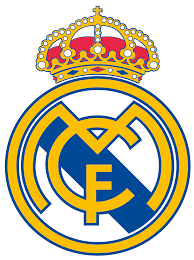
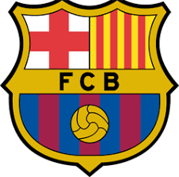
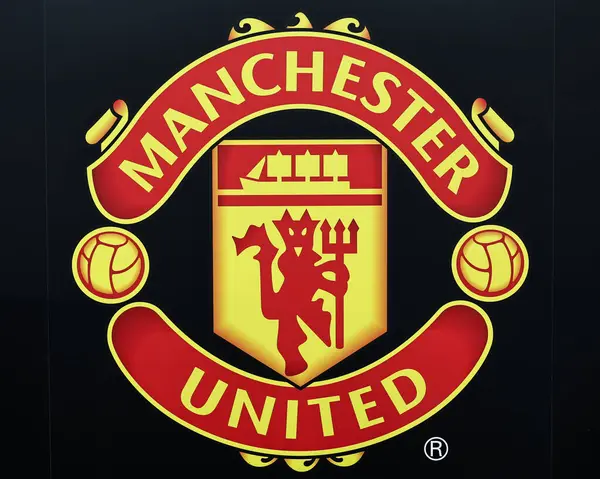
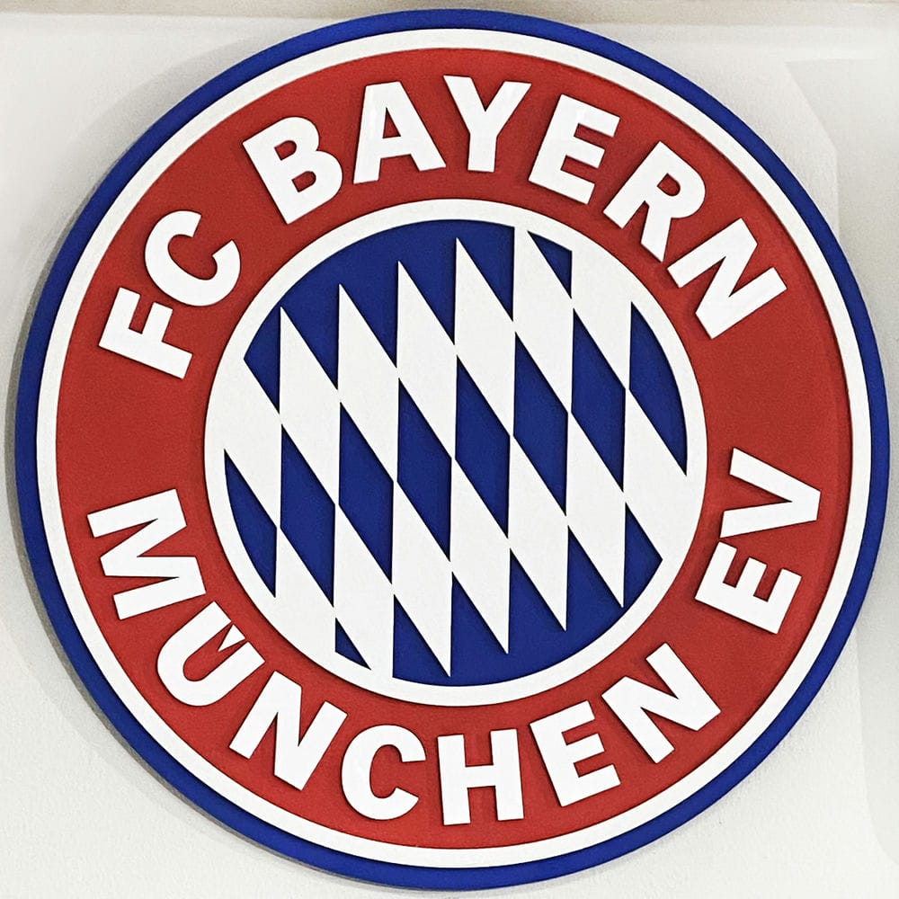
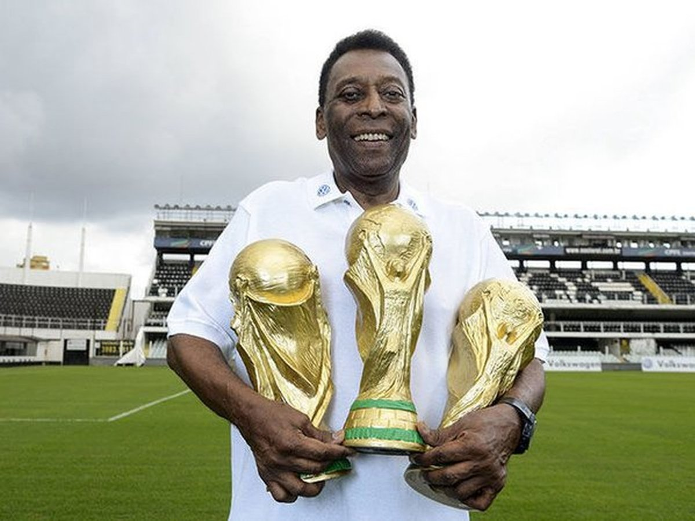
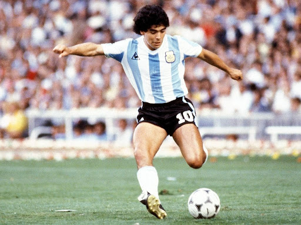
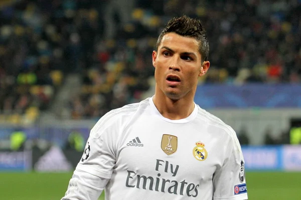

Футбол

Футбол – найпопулярніший вид спорту у світі, в який грають дві команди по одинадцять гравців кожна, на прямокутному полі з воротами на кожному кінці. Метою гри є забити м'яч у ворота суперника, використовуючи будь-яку частину тіла, крім рук та кистей (за винятком воротаря у межах власного штрафного майданчика).
Коротка історія футболу
Історія футболу, а точніше ігор, подібних до сучасного футболу, бере свій початок ще з античних часів. У Європі ігри з м'ячем набули особливої популярності в середньовічній Англії. Сучасний футбол зародився зі створенням Футбольної асоціації Англії в Лондоні, Велика Британія, в 1863 році як результат численних зусиль зі стандартизації різних форм гри. Це дозволило клубам проводити матчі без суперечок за уніфікованими правилами, які забороняли рух по полю з м'ячем у руках та виконання підніжок та підсічок (звідси і виник поділ між футболом та регбі). В Єлисаветграді з самого започаткування футболу, були гарні гравці і фанати. Згадки про те, що містяни грали в цю гру є в книжках багатьох краєзнавців. Не існує єдиної думки щодо походження перших ігор, де м'яч відбивали ногами. Згідно з китайськими легендами футбол винайшов Жовтий імператор Хуанді близько 5 тисяч років тому. Також існують думки, що китайську гру «куджу» могли вигадати за часів Цинь Ші Хуанді або Ву Ді з династії Хань. Достеменно відомо, що вже у період династії Сун існували майже закриті клуби «куджу», куди було дуже важко потрапити. У китайському романі «Річкові заплави», датованому XV століттям, зображено, як грають у куджу в епоху династії Мін (1366—1644). Китайські дослідники змогли обґрунтувати і довести першість Китаю в іграх з м'ячем, тому ФІФА офіційно визнала цю країну батьківщиною футболу. В античні часи подібні ігри були в різних країнах: у Єгипті; в Японії — «кемарі», ймовірно, різновид куджу, який привезли з Китаю 600 року н. е. В античній Греції грали в «епіскірос», а в давньому Римі існувала гра «гарпастум», але там можна було брати м'яч у руки і використовувати силові методи боротьби, тому забава була схожа на регбі. У Середньовіччі у Франції грали в «ля суль» (ля шуль) м'ячем, з повітрям або ганчір'ям усередині, в італійських містах Флоренція та Падуя популярним було «кальчо» — жорстка гра, де можна було використовувати для відбивання кулі і руки і ноги, яка часто завершувалася травмами учасників. В італійській мові сучасний футбол зберіг старе ймення та називається італ. «calcio». Відомо, що ще в 1580 році граф Верніо (Джованні де Барді) видав правила кальчо. Шота Руставелі згадував про грузинську забаву «лело», але більшість середньовічних ігор дуже відрізнялися від сучасного футболу.
Правила гри
Уперше правила введені 7 грудня 1863 року Англійською футбольною асоціацією. Базувались на придуманих у Кембриджському університеті положеннях гри. Футбольний м'яч. Грають на футбольному полі завдовжки 90—120 метрів і завширшки 45—90 метрів. На двох протилежних кінцях стоять ворота (завширшки 7,32 м і заввишки 2,44 м), куди потрібно завести м'яча. М'яч, обвід якого повинен бути 68-71 см, а маса — від 396 до 453 грамів. У момент початку гри тиск усередині кулі має бути від 0,6 до 1,1 атмосфери (600—1100 г/см²). Кількість запасних гравців визначається регламентом змагання і знаходиться у межах від 3 до 7. Рішення судді є остаточними і під час гри не переглядаються, якщо на матчі не задіяна система відеоасистенту арбітра. В такому випадку після прийняття рішення та в разі порушення правил відеоасистент арбітра може запропонувати головному арбітру змінити своє рішення шляхом усної рекомендації або перегляду відеоповтору моменту безпосередньо головним арбітром. Для подачі скарг на дії суддів існує регламент змагання і спеціальні комітети, що розглядають дані питання. Футбольний матч складається з двох рівних таймів по 45 хвилин із 15-хвилинною перервою між ними. Після перерви команди міняються воротами. За домовленістю тривалість тайму може бути змінена. Проте домовленостей потрібно досягти до початку матчу, і вони не повинні суперечити правилам змагання. Перерва між таймами не перевищує 15 хвилин й указується у регламенті змагань. Регламент змагань може потребувати додаткового часу для вирішення нічиїх. За правилом 9 футбольних правил м'яч вважається таким, що «вийшов з гри», якщо він цілком виходить за межі поля, або гра зупинена суддею. Голом називається ситуація, коли м'яч цілком перетнув лінію воріт, розташовану між стійками і під перекладиною, й при цьому команда, що забила гол, не порушила правил. Порушення караються штрафним або вільним ударом, попередженням або видаленням гравця. Пенальті — вид штрафного удару у футболі, що пробивається з відстані 12 ярдів (приблизно 11 метрів від воріт). Тільки воротар команди, що захищається, може знаходитись між м'ячем і воротами під час пробиття цього удару. Пенальті пробивається під час звичайної гри. Схожі удари також пробиваються під час післяматчевих пенальті для визначення команди, що проходить у наступний раунд змагань у випадку, якщо матч закінчується внічию. Хоча процес пробиття цих ударів схожий з пробиттям пенальті, вони офіційно не вважаються пенальті; процес пробиття цих ударів відбувається згідно з іншими правилами. Вкидання м'яча є одним із способів відновлення гри. Гол, забитий безпосередньо після вкидання, не зараховується. Вкидання призначається у випадку, коли м'яч повністю перетне бокову лінію поля, з місця, де м'яч перетнув лінію на користь команди-суперниці гравця, що останнім торкнувся м'яча. При вкиданні м'яча не фіксується положення «поза грою». Удар від воріт призначається, коли м'яч, останнього разу торкнувшись гравця нападаючої команди, повністю перетнув лінію воріт, і гол не був забитий. Якщо ж м'яч пішов за лінію воріт від гравця команди, що оборонялася, призначається кутовий. Кутовий удар є одним з найнебезпечніших стандартних положень. Команди часто відпрацьовують тактику у захисті й нападі при пробитті кутових ударів. Оскільки всі відстані заздалегідь відомі, то грамотно пробитий кутовий удар стає прекрасним шансом забити гол. Найчастіше м'яч з кутового навішують у штрафний майданчик, де високі футболісти або прагнуть одразу пробити по воротах, або скинути м'яч під удар партнерові. Рідше подають м'яч низом, але через велике скупчення гравців при кутових опанувати м'ячем буде складніше.
Популярні клуби та команди
-  Реал Мадрид-іспанський футбольний клуб із Мадрида, заснований 6 березня 1902 року. Один із найвідоміших і найсильніших клубів Іспанії та світу. Найкращий футбольний клуб XX століття за версією ФІФА
-  Барселона-заснований 29 листопада 1899 року групою швейцарських, каталонських, німецьких та англійських футболістів на чолі з Жоаном Гампером, футбольний клуб з Барселони, Каталонія, Іспанія. Виступає у Ла-Лізі, найвищому дивізіоні системи футбольних ліг Іспанії.
-  Манчестер Юнайтед-англійський футбольний клуб з осідком в Олд-Траффорд, районі метрополійного Манчестера. Заснований під назвою «Ньютон-Гіт» у 1878 році, клуб змінив свою назву на «Манчестер Юнайтед» 1902 року.один із найуспішніших англійських клубів за кількістю трофеїв за всю історію, а за останні 20 років — найуспішніший клуб в Англії. Команда виграла 38 значних кубків з жовтня 1986 року, коли команду очолив Сер Алекс Фергюсон.
-  Баварія Мюнхен-німецький футбольний клуб із Мюнхена. Виступає в Бундеслізі, найвищому дивізіоні в системі футбольних ліг Німеччини. Найуспішніший клуб в історії німецького футболу, який 33 рази ставав чемпіоном країни, включаючи одинадцять перемог поспіль з 2013 по 2023 роки, 20 разів виграв Кубок Німеччини, а також має численні європейські трофеї.
Відомі гравці
-  Пеле (Бразилія) - легендарний нападник, триразовий чемпіон світу.
-  Дієго Марадона (Аргентина) - видатний півзахисник, чемпіон світу 1986 року.
 Ліонель Мессі (Аргентина) - один з найкращих гравців сучасності, багаторазовий володар "Золотого м'яча".
Ліонель Мессі (Аргентина) - один з найкращих гравців сучасності, багаторазовий володар "Золотого м'яча".-  Кріштіану Роналду (Португалія) - видатний нападник, багаторазовий переможець Ліги чемпіонів УЄФА.